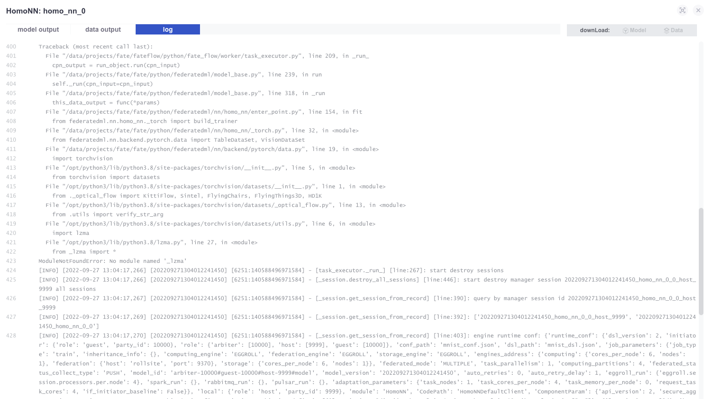
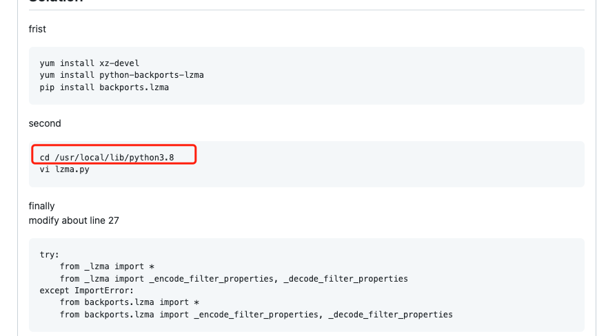
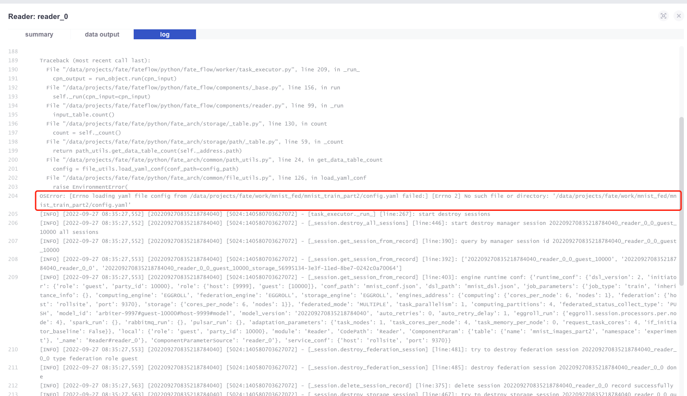

本文汇总在使用和开发FATE时遇到的各类问题，以及给出可能的解决方案。
flow init
问题状态
已解决
问题描述
首次进入fate-client时，提示需要执行flow init，否则有关flow的命令都执行不了。
解决方案
flow init --ip <docker容器宿主机ip> --port 9380
ModuleNotFoundError: No module named ‘_lzma’
问题描述
执行任务时，nn模块报错：ModuleNotFoundError: No module named ‘_lzma’

解决方案
在fate-flow container安装相关的包即可（guest、host和arbiter都要安装）。安装教程：https://github.com/ultralytics/yolov5/issues/1298
这里需要修改路径

找不到文件：No such file or directory: ‘/data/projects/fate/work/mnist_fed/mnist_train_part2/config.yaml’
问题状态
已解决
问题描述
在执行任务时，reader组件报错：

这是由于我把数据保存在了fate-client，而fate读取数据是在fate-flow container导致的。
解决方案
由于fate-client和fate-flow两个容器中的examples文件夹挂载到docker底层同一处存储。所以把数据放到examples下，把配置修改为新的文件路径即可。
开发新的FATE-FLOW API
这里是已有的API：https://federatedai.github.io/FATE-Flow/latest/zh/swagger/
FATE的HTTP接口都是基于flask框架编写的。
开发步骤如下：
- 进入FATE-FLOW容器
- cd /data/projects/fate/fateflow/python/fate_flow/apps
- 新建python文件，命名为xxx_app.py，编写新的接口。
- 重启FLOW容器
修改代码导致docker container没起来
修改FATE-FLOW的代码后，由于代码有bug，导致容器起不来，又导致不能进入容器修改代码的死循环，怎么办？
查看docker容器的启动日志，确定出错的代码，docker cp拷贝出来需要修改的代码，再拷贝回去。
实际训练的epoch小于配置的max_iter
查看自己是否在配置文件中配置了：
"early_stop": { |
这里的意思是，如果两个epoch得到的loss之差小于0.0001时则停止训练。
memory error
根据实践经验，memory error 还有dataloader worker pid之类的错误，均是由于内存不够引起的。调小batch size，或者增加硬件配置